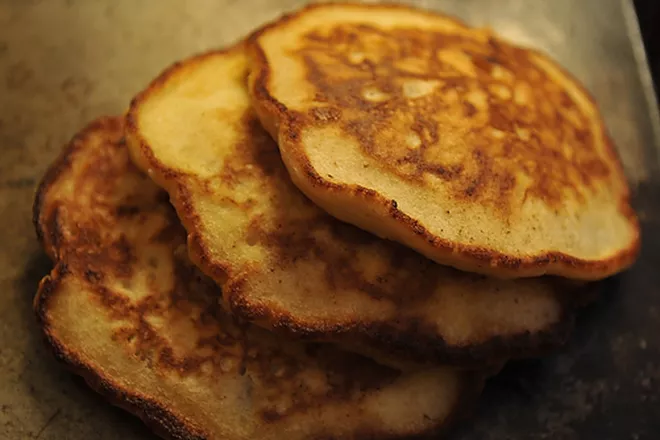

Perfect Panckes

Description
I love pancakes. I have tried many different recipes but I always come back
to the one my mother made for me as a child. She altered the fruit with the
season: blueberries in the summer, apples in the fall and winter. You can
skip the fruit altogether and the pancakes will still be perfect. I use a
cast iron pan, which requires extra butter for cooking the pancakes, rather
than non-stick cookware. Don't forget the bacon.
A pancake shouldn’t always depend on syrup, and here’s a terrific example of
one that does not. You begin by browning a couple of tart apples first in
butter, second in maple syrup. Then you fold these right into the batter,
creating a delicious one-stop-shopping pancake. All you need is a slick of
good salted butter. Sweet enough uses a handy technique for the batter,
beating it in a mixer until it’s as frothy as an ice cream soda – whether
it’s imaginary or real, the bubbles seem to lift the cakes to ethereal
heights.
Ingredients
- 2 cups AP Flour
- 4 teaspoons baking powder
- 1 teaspoon salt
- 1 tablespoon sugar
- 2 eggs
- 1 and 1/2 teaspoons vanilla extract
- 1 3/4 cup whole milk
- 1/4 cup plus 2 tablepsoons melted butter
- 2-3 granny smith apples peeled, cored, and thinly sliced
- 1 tablepoon maple syrup
Directions
- melt the two tablespoons of butter in a pan. when the butter just
starts to bubble, add the apples. cook over a medium heat until
they start to release their liquid. add the maple syrup and cook
until the apples start to caramelize. remove from heat and set
aside.
- sift the dry ingredients together and set aside. put the eggs,
vanilla extract and milk in a mixing bowl and beat at a high speed
with an electric mixer or whisk for a few minutes until the liquid
looks frothy. add the flour and mix on the lowest speed until the
large lumps disappear. gently blend in the melted butter and apples.
do not over mix.
- melt a tablespoon of butter in a heavy skillet over a medium high
heat. the pan needs to be hot. test it by putting a drop of batter
in the pan. if it sizzles, it's hot enough. using a soup ladle,
add as many pancakes to the pan as it will hold without crowding.
when you start to see bubbles forming and the edges starting to
harden, flip the pancakes over and cook for a few minutes on the
other side. serve with warm maple syrup.